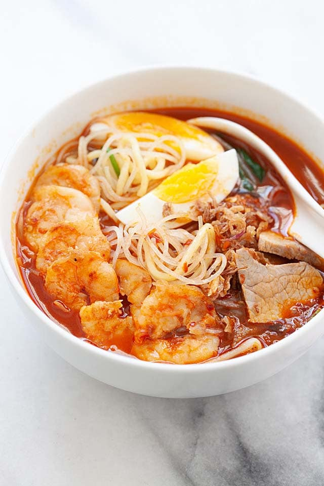

Penang Hokkien Mee

Description
Penang Hokkien Mee is a popular prawn noodle soup found in Penang, Malaysia. Sold by hawkers and street vendors, this noodle soup is popular throughout the day.
Ingredients
- Shrimp heads
- Rock sugar
- 1.5lbs pork ribs, cut into pieces
- Salt
- 30 dried chilies
- 5 cloves garlic
- 6 tbps cooking oil
- 1 pound yellow noodles
- Kangkong
- Bean sprouts
Steps
- Blend the chili paste ingredients with a mini food processor until finely ground and well blended. Heat up the wok and add cooking oil. Stir fry the chili paste for 5 minutes. Dish up and set aside.
- On the same wok unwashed, add in a little oil and cook the shrimp topping. Add in a little chili paste, sugar, and salt. Pan-fried the shrimp until they are slightly burned. Dish out, let cool, and sliced them into halves.
- Add 15 cups of water into a pot and bring it to bowl. Add in all the shrimp heads and shell and simmer on low heat for about 2 hours or longer until the stock becomes cloudy and tastes really prawny.
- Strain the stock through a sieve and transfer the stock into another pot. Discard the shrimp heads and shells. Scoop up and discard the orange "foam" forming at the top of the stock.
- Bring the stock to boil again and add in half of the chili paste. You can add more chili paste if you like it spicier.
- Add in the pork ribs and continue to boil in low heat for another 1-1.5 hour until the pork ribs are thoroughly cooked.
- Add rock sugar and salt to taste.
- To serve, place a portion of yellow noodles, rice vermicelli, water convolvulus and bean sprouts in a bowl. Ladle hot stock over. If desired, add a few pieces of pork ribs. Top with sliced pork meat, sliced shrimp, egg quarters, and sprinkle with shallot crisps.
- Serve immediately with more chili paste to taste.